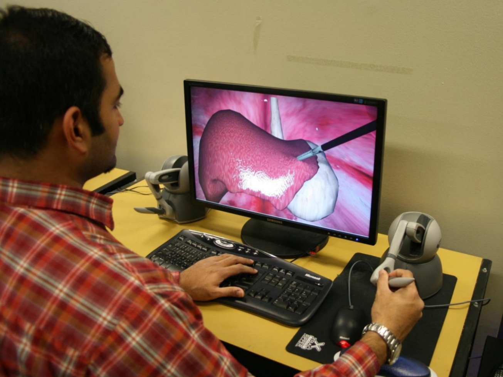
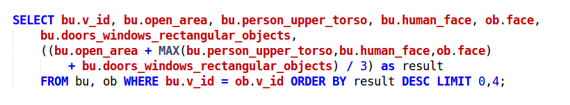
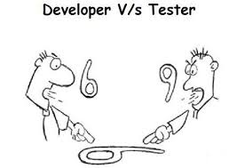

Djay for 
18 November 2016
Dhanannjay Deo (धनंजय देव)

Master of Science (faculty of engineering)
Indian Institute of Science, Bangalore, India, 2003-6
Product design, mechanism design, geometric modeling, CAD
Mesh processing for computerized facial anthropometry
Input and process
Triangulated surface, gaussian curvature, thresholding and morphological operations
Prototype
c, python, matlab, OpenGL, glut, glui
Doctor of Philosophy (Mechanical engineering)
Rensselaer Polytechnic Institute, Troy, NY, 2005-10
Computational mathematics, Computational mechanics, (linear and nonlinear) finite element method, Software design
Simulation based training
For laparoscopic surgery
How soft tissues interact with the tool
How do they deform
How do they cut or burn
How much reaction force is exerted on the tool
Experiment !!
What are models of soft tissues
How to simulate soft tissues ?
Use COTS solver like Abaqus
How to interactively simulate soft tissues ?
in realtime ?
Simulator architecture

PhyNNeSS

Tunable data approximation using radial basis function network
C++, OpenGL, python, matlab
Notable projects at Kitware Inc 
Kitware is technical software company specializing in R and D in the domains of medical imaging, computer vision and scientific visualization
Kitware GENIE
General Engine for Indexing Events
Content based video classification and search
Interactive evaluation of machine learning system
Demo again ?
Disclaimer: my words but not my voice
full stack web, python, javascript, celery, MongoDB, sqlite3
"IARPA Program manager included this demo in her deck"
Accept query in natural language and match to the higher level features available
How to combine scores of each selected feature for ultimate ranking
How ?
ScoreFusion vs RankFusion vs TwistedStrategyMarch6 
Intelligence Advanced Research Projects Activity (IARPA)
TrevVID multimedia event detection and recounting
Digital SlideAtlas

Digital Slide Atlas
Large scale of image data
Typical whole slide image size 1gb
compressed (150000x85000px ~ 12 GigaPixel)
Largest was over 1 tera pixel, and sometimes there is a stack
A hundred can be loaded in cartrige
Hundreds of students per session
Thankfully will access similar set of images
Data copy becomes prohibitive
Variety of file formats, vendor specific, source specific
Open source ?
SDK available ?
Specification available?
Versions ?
Endianness ?
Do we support ?
Should we ?
Could we ?
support contract ?
Additional infomation (metadata)
Custom metadata like bar code
Absence of expected label image etc
unknown metadata (To save or not to save)
Anonymize patient information
Owners copyright and trust
Security and access control list
Image pyramid
Locating the image tile

Uploaded over web
Diced on client into 1mb chunks,
Last chunk of the upload stream triggers processing task
Distributed task queue asssembles the file and converts to image pyramid
Named queues, to leverage platform specific SDK
Image avaiable for interactive viewing
Images deposited in shared folder
For certain labs microscopes
Hearbeat process monitors the folder for any additions
Files are queued for processing
Decision tree to select best reader
Normalize coordinate system
Pre compute thumbnails
Deployment and workflow
Color histograms and thresholding

Object level change detections plugin

Machine learning
SlideAtlas as annotation platform to generate ground truth
Deep convolutional neural networks trained with Caffe
Transfer learning from CIFAR-10 dataset
Multi class object detector
Profiling and automated tests
Questions, Comments, Advisements ?
dhandeo@gmail.com
https://github.com/dhandeo
https://www.linkedin.com/in/dhandeo
https://twitter.com/dhandeo
Thank you !